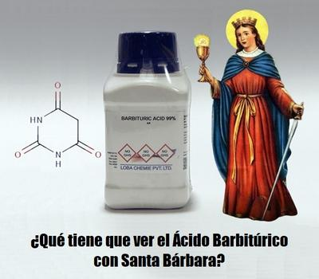

Cada 4 de diciembre los químicos podrían celebrar —aunque quizás nunca lo hagan— el descubrimiento del ácido barbitúrico, una sustancia que, sin pretenderlo, cambió para siempre la historia de la medicina moderna. Fue en esta misma fecha del año 1863 (hace ya 162 años), cuando Adolf von Baeyer (1835-1917), un joven químico alemán que ganó el premio Nobel de Química en 1905, logró sintetizar este compuesto orgánico basado en la estructura de la pirimidina, dando origen a toda una familia de fármacos calmantes y somníferos: los barbitúricos. Sin embargo, lo curioso no es sólo en el hallazgo químico, sino en el nombre que recibió la sustancia.


Según la versión más conocida, Baeyer realizó su descubrimiento precisamente el día dedicado a Santa Bárbara, y en homenaje a esta festividad, bautizó el compuesto como «barbitúrico». Aunque según otra versión más pintoresca, el nombre fue inspirado por una camarera llamada Bárbara, con la que el joven Baeyer habría brindado aquella noche. Sea cual sea la verdad, el nombre quedó grabado en la historia científica… con un toque de santoral.
Pero aquí comienza otra parte curiosa: ¿quién era esa «Santa Bárbara» que sin imaginárselo dio su nombre a una sustancia química con propiedades sedantes? —Se trata de Bárbara de Nicomedia (273–306), una mártir paleocristiana fenicia, conocida en la Iglesia Ortodoxa Oriental como la Gran Mártir Bárbara. Y su historia, como muchas de las primeras hagiografías cristianas, está cubierta de dramatismo, milagros y violencia.
Según la leyenda, su propio padre la encerró en una torre para evitar que se casara o que el cristianismo llegara a sus oídos. Y durante su reclusión, Bárbara recibió educación en poesía y filosofía, aunque —según la tradición— eso no impidió que terminara convirtiéndose al cristianismo por medios misteriosos. Se cuenta que incluso envió un mensaje al célebre teólogo Orígenes, pidiéndole que la instruyera en la nueva fe.
Pero cuando su padre descubrió su conversión, montó tanto en cólera que trató de matarla. Y cuando Bárbara huyó, una roca se abrió milagrosamente para ocultarla, aunque el prodigio no le sirvió de mucho, ya que siempre fue capturada, atadas sus extremidades a un potro, flagelada y desgarrada con rastrillos de hierro, y finalmente decapitada por su propio padre en la cima de una montaña. La historia concluye con otro toque de dramatismo sobrenatural: un rayo cayó del cielo, y mató al parricida en el acto. Esto bastó para que Bárbara fuera convertida no sólo en «santa», sino en patrona de los artilleros, mineros y trabajadores de explosivos, así como todos aquellos que viven entre truenos, fuego y metal.
Así que resulta contradictorio, y hasta irónico, que el nombre de una sustancia calmante y sedante como el ácido barbitúrico, esté ligado a una santa cuya historia está asociada a tormentas, explosiones y relámpagos. Pero así es la cultura humana: una mezcla caótica de ciencia, superstición y tradición. Usamos nombres, celebramos fechas y repetimos historias, sin detenernos a pensar en sus raíces.
Seguramente Baeyer, él nunca pensó en «Santa Bárbara» más allá de un guiño a la coincidencia de la fecha. Pero el hecho de que una figura legendaria del santoral cristiano haya terminado dándole nombre a una sustancia puramente química y secular, muestra hasta qué punto la religión se infiltra hasta en los rincones más insospechados de nuestra cultura. Hasta en un tubo de ensayo puede haber, sin pretenderlo, un eco de la mitología cristiana.
Y así, cada 4 de diciembre, la ciencia y la fe se cruzan de nuevo en el calendario. Unos recordarán a una «mártir» del siglo IV, mientras que otros a un químico del siglo XIX. Pero en todo caso ambos nombres —Bárbara y barbitúrico— seguirán unidos quiérase o no, y no por milagros ni oraciones, sino por aquella curiosa decisión que dio a la ciencia —voluntariamente o no— un toque de santidad.
[Godless Freeman]
Comentarios
Comments powered by Disqus